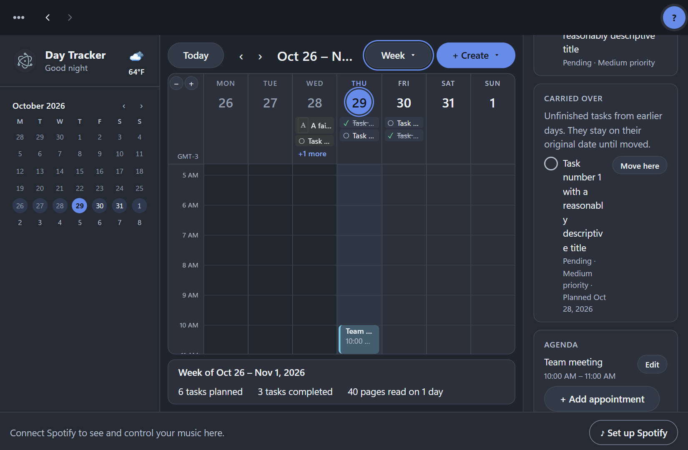

Day, week and month
A calendar with hours you can zoom, appointments that repeat every day, on chosen weekdays or dates, and your country's holidays already marked.
Plan your days, keep your appointments and tasks together, track your reading, and play your music without leaving your calendar. All in one calm, dark desktop app.
Free · Windows 11, 64-bit · Version 0.1.0 · Your data stays on your computer.

Built for one person and their own computer: quick to open, works offline, and never asks you to sign up.
A calendar with hours you can zoom, appointments that repeat every day, on chosen weekdays or dates, and your country's holidays already marked.
Plan tasks for a day, see the ones carried over, search and filter them all, and write a short review of how the day went.
Log pages against a daily target, see the book you're reading with its cover, and switch between books like a carousel.
Connect Spotify and control it from a player bar: browse Liked Songs and your playlists, pick a song, queue it, skip, seek and set the volume.
The weather where you are, in little pixel-art pictures, and a good morning, afternoon or night with your name.
A checked backup every day and before every upgrade, restore in a few clicks, and CSV exports of everything you track.
Day Tracker keeps everything in a database in your own Windows profile. There is no account and no cloud copy. It only reaches the internet for the extras on the right, and only sends what each one needs.
Download the installer, open it, and Day Tracker starts. A few things are good to know first.
The installer is not code-signed yet, so Microsoft Defender SmartScreen does not know it. Choose More info, then Run anyway. On a PC with Smart App Control turned on, Windows blocks unsigned apps completely; a signed installer will fix that in a later version.
Windows 11, 64-bit. Everything else, including Java for the app's data service, is inside the installer.
A Spotify Premium account (Spotify only allows playback control for Premium), a one-time free app in the Spotify developer dashboard, and the Spotify app installed. Day Tracker starts it in the background when you press play.
In %APPDATA%\Day Tracker. Settings has backups, restore and CSV exports. Uninstalling keeps your
data, so reinstalling picks up where you left off.
Free for Windows 11. Version 0.1.0.